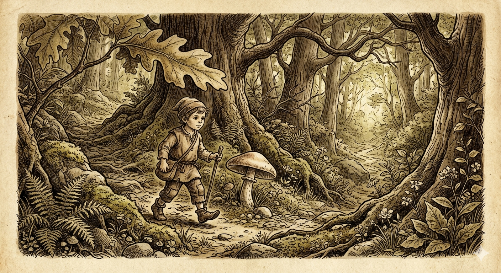

El cuento de la fábula de Pulgarcito
Pulgarcito
Había una vez una familia de humildes leñadores que tenía siete hijos. El más pequeño de todos era tan diminuto que no pasaba del tamaño de un dedo pulgar, por lo que todos lo llamaban Pulgarcito. A pesar de su tamaño, era el más inteligente y observador de todos sus hermanos.
Un año, una gran escasez azotó la región. Los padres, desesperados por no tener cómo alimentar a sus hijos, tomaron una dolorosa decisión: llevarían a los niños al bosque y los dejarían allí, esperando que alguien con más recursos los encontrara y los cuidara.
El primer escape: Las piedras blancas
Pulgarcito, que era muy despierto, escuchó la conversación de sus padres por la noche. Al día siguiente, antes de partir hacia el bosque, se llenó los bolsillos con pequeñas piedras blancas.
Mientras caminaban adentrándose en la espesura, Pulgarcito iba dejando caer las piedras una a una sin que nadie se diera cuenta. Cuando sus padres los dejaron solos, los hermanos comenzaron a llorar de miedo.
"No os preocupéis", dijo Pulgarcito con calma. "Seguidme".
Gracias a la luz de la luna que brillaba sobre las piedras blancas, Pulgarcito guió a sus hermanos de regreso a casa. Los padres, arrepentidos de lo que habían hecho, se alegraron enormemente al verlos volver.
El segundo intento: Las migas de pan
Lamentablemente, la miseria continuó. Poco tiempo después, los padres se vieron obligados a intentar lo mismo otra vez. Esta vez, Pulgarcito no pudo recoger piedras porque la puerta estaba cerrada, así que guardó en su bolsillo el trozo de pan que le dieron para el desayuno.
A medida que se internaban en el bosque, fue dejando caer migas de pan. Pero esta vez el plan falló: los pájaros del bosque se comieron todas las migas. Cuando se quedaron solos, no había rastro que seguir. Los siete hermanos vagaron perdidos, cansados y asustados bajo la tormenta.
El encuentro con el Ogro
Buscando refugio, Pulgarcito subió a la copa de un árbol y vio una luz a lo lejos. Siguieron el brillo hasta llegar a una enorme casa. Al llamar a la puerta, los recibió una mujer de aspecto bondadoso pero asustado.